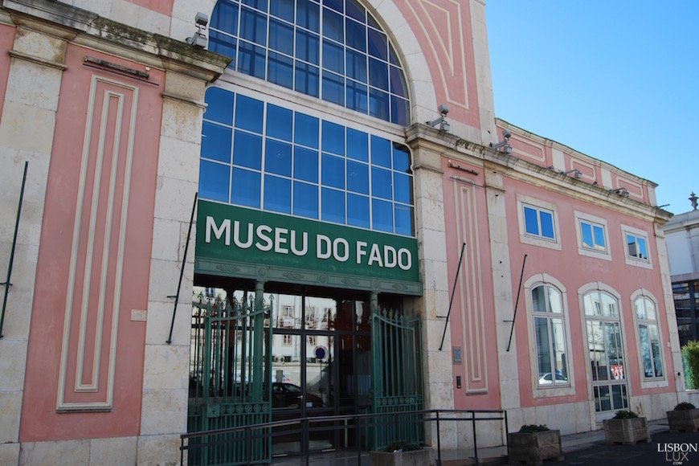

Fado Museum

Entirely devoted to Lisbon's urban song universe, Museu do Fado opened its doors to the public on the 25 September 1998, celebrating Fado’s exceptional value as an identifying symbol of the City of Lisbon, its deep roots in the tradition and cultural history of the country, its role in the cultural identity statement and its importance as an inspiration source and intercultural trade between people and communities. Conceptually assuming Fado as a performing art under permanent construction, the Museum has various functional valences – Museum School, documentation centre, auditorium, permanent and temporary exhibitive circuit – which have contributed to fulfilling the defined mission.